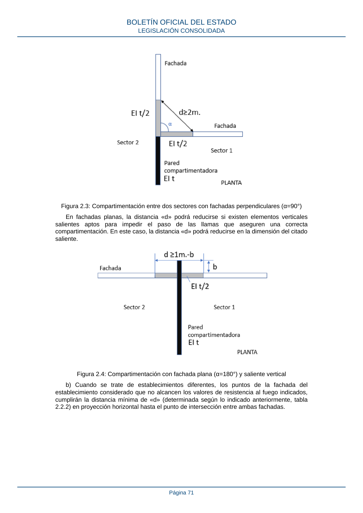

RSCIEI · Página 71 · versión 2025-04-10
SHA256: 85aa0af25d51e5b58d8975a4eefbf76d3f57a8933445cfe814ae9c4818a2e3e7 · página física 71 de 108 · métodos de encabezado
solo si están cotejados.
Formatos: Markdown · JSON de bloques · PDF p. 71 · imagen PNG
Figura 2.3: Compartimentación entre dos sectores con fachadas perpendiculares (α=90°) En fachadas planas, la distancia «d» podrá reducirse si existen elementos verticales salientes aptos para impedir el paso de las llamas que aseguren una correcta compartimentación. En este caso, la distancia «d» podrá reducirse en la dimensión del citado saliente. Figura 2.4: Compartimentación con fachada plana (α=180°) y saliente vertical b) Cuando se trate de establecimientos diferentes, los puntos de la fachada del establecimiento considerado que no alcancen los valores de resistencia al fuego indicados, cumplirán la distancia mínima de «d» (determinada según lo indicado anteriormente, tabla 2.2.2) en proyección horizontal hasta el punto de intersección entre ambas fachadas. BOLETÍN OFICIAL DEL ESTADO LEGISLACIÓN CONSOLIDADA Página 71
